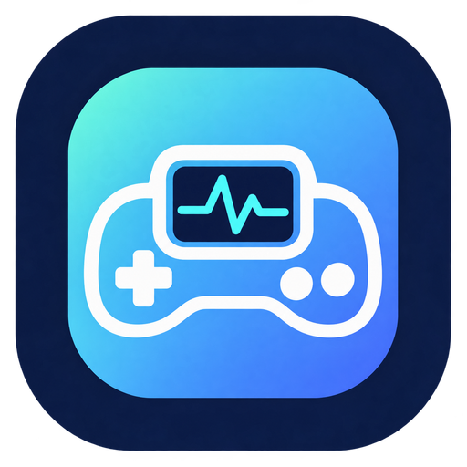

Higher / Lower
Compare medical facts before the timer runs out.

MEDGAMES17 games. Quick rounds.
Fast medical mini-games for testing your knowledge, sharpening recall, and chasing a better score.
The lobby
Each round is designed to fit into a coffee break, a commute, or the five minutes before your next thing.
Compare medical facts before the timer runs out.
Reveal clues and lock in today’s diagnosis.
Spot the dangerous value under pressure.
Choose the best immediate clinical step.
Match the medical pairs as quickly as you can.
Recognize the rhythm and keep the run alive.
Find the term that does not belong.
Move quickly through original board-style questions.
Catch the unsafe detail before time runs out.
Also inside: Red Flag · Rapid Triage · Sort It · Rank It · Who Am I? · Drug Chain · Diagnosis Ladder · Swipe Mode
Made for replay
MedGames is an educational game, not a clinical decision-support tool. Your progress stays on your device, ready for the next quick challenge.